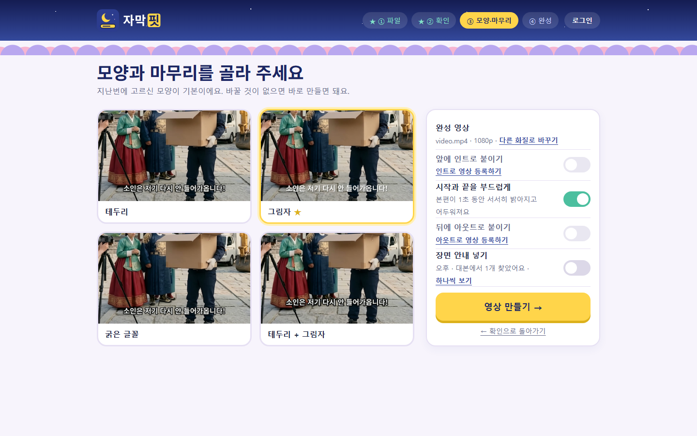

무료 시험판 0.9Windows
대본 그대로, 싱크까지 맞춘 자막
대본 PDF와 완성 영상을 넣으면 대사를 자막으로 옮기고 음성에 맞춰 싱크를 잡습니다. 확인이 필요한 줄만 따로 보여 줍니다.
- 영상은 PC 밖으로 보내지 않음
- 로그인 없이 사용 가능
- 새 판 자동 업데이트
자막핏이 하는 일
대사는 대본에서
대본 PDF에서 대사만 골라 자막 문구로 씁니다. 대사를 다시 입력할 필요가 없습니다.
싱크는 음성 인식으로
음성 인식 결과와 대본 줄을 짝지어, 대사가 시작하고 끝나는 시점에 자막을 놓습니다.
인터뷰 쇼츠
인터뷰 대본과 장면 클립을 넣으면 질문 자막, 구역 카드, 앞·끝 화면을 붙여 세로 영상으로 만듭니다.
사용 순서
-
1
대본과 영상 넣기
'새 영상에 자막 달기'에서 대본 PDF와 자막 없는 완성 영상을 고릅니다. 원본 파일은 수정하지 않습니다.
첫 화면 -
2
음성 인식·싱크 맞추기
4분 영상 기준 약 20초 걸립니다(NVIDIA 그래픽카드 PC). 그래픽카드가 없으면 더 오래 걸립니다.
-
3
확인 필요한 줄 검토
싱크가 애매한 줄만 표시됩니다. 영상을 보며 '맞아요'를 누르거나 '조금 일찍'·'조금 늦게'로 조정합니다.
확인 화면 · 66줄 중 3줄 표시 -
4
MP4·SRT 내보내기
자막 모양 4가지 중 하나를 고르고 인트로·아웃트로·페이드를 켤 수 있습니다. 다른 편집 프로그램에서 쓸 때는 SRT로 내보냅니다.

모양·마무리 화면
실제 작업 기록
악동꼬마 채널 《조선에 출동했습니다》 작업에서 측정한 값입니다. PC 사양과 영상에 따라 달라집니다.
- 약 20초자막 초안까지4분 안팎 영상, NVIDIA 그래픽카드 PC, 5회 측정 12~24초
- 66줄 중 3줄직접 확인한 줄시즌2 10편. 4편은 55줄 중 5줄, 인터뷰 쇼츠는 13줄 중 0줄
- 약 2분 15초완성 MP4까지(인트로·아웃트로 포함)10편 작업 1회 기록. 기존 방식(CapCut에 자막 붙여넣기)은 제작자 체감 50분~1시간으로, 측정값은 아닙니다
영상·음성 처리 위치
도구마다 영상·음성을 처리하는 위치가 다릅니다. 각 회사 공식 안내에서 확인한 내용만 적었습니다.
| 도구 | 처리 위치 | 공식 안내 |
|---|---|---|
| 자막핏 | 사용자 PC. 인터넷은 인식 모델을 처음 받을 때, 로그인할 때, 사용 통계 전송에 동의한 경우에만 사용 | 이 사이트 · 개인정보 처리방침 |
| CapCut 자동 캡션 | 클라우드(음성 인식과 클라우드 처리) | CapCut 도움말 |
| Vrew | 음성만 서버로 전송해 인식(영상은 전송하지 않으며 1시간 이내 삭제한다고 안내) | Vrew 도움말 |
| YouTube 자동 자막 | YouTube 서버(영상 업로드 필요) | YouTube 고객센터 |
| Premiere Pro 음성-텍스트 | 사용자 PC(언어 팩 설치 시 오프라인) | Adobe 안내 |
2026년 10월 19일 각 회사 공식 안내 기준이며 바뀔 수 있습니다. 각 상표는 해당 소유자의 것이며 자막핏과 관계없습니다.